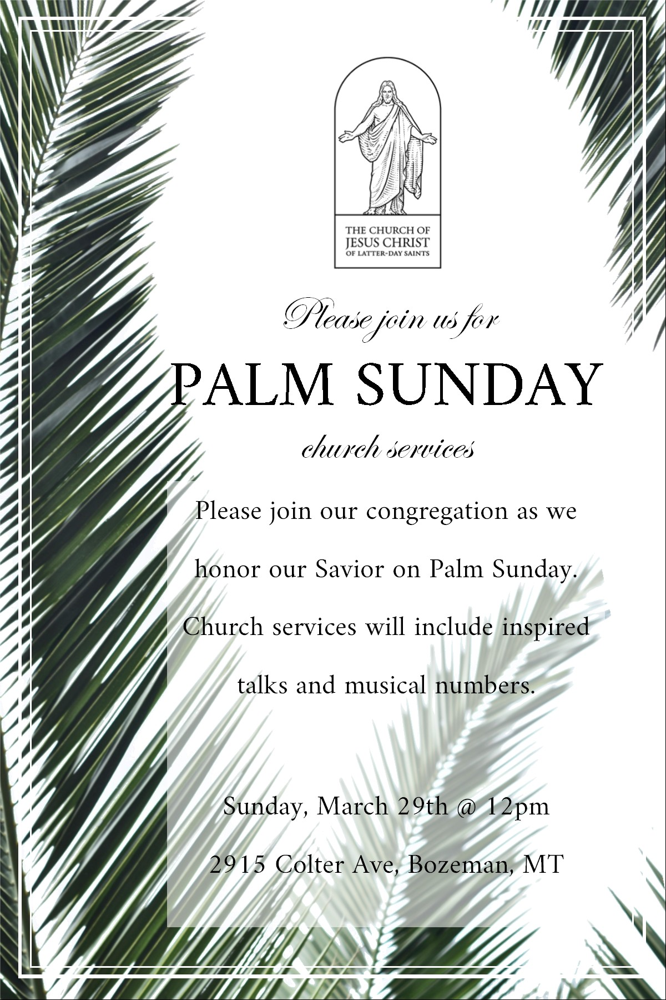

...much people...went forth to meet him, and cried, Hosanna: Blessed is the King of Israel that cometh in the name of the Lord.
John 12:12-13
March 29th: Palm Sunday Sacrament meeting, no 2nd hour meetings. A "Holy Week Walk" will follow Sacrament Meeting.
April 3rd: 1st Ward Easter Party at 6pm.
April 4th-5th: General Conference.
April 12th: Ward Conference.
This month is 1st ward's responsibility for building security. Please use the button below to sign-up or look for the sign-up sheet being passed around in the 2nd hour.
Please invite your friends and neighbors to come and join us for our special Palm Sunday Sacrament Meeting followed by a "Holy Week Walk" at the Stake Center.
This unique inspirational Easter event will include displays portraying the last week of the Savior's life and the significance of his Atonement and Resurrection.

Community Emergency Preparedness Fair
Saturday, April 25th -- 10am to 12 noon
Meet in the Stake Center Gym
Invite your friends to come and learn how to be safe and prepared.
Pray each day for a missionary experience.
| Blake Bishop | |
| Colburn Cook | |
| Kason Swensen |
| Presiding | Bishop Kinghorn |
| Conducting | Dan Bates |
| Organist | Stacey Koester |
| Chorister | Aleta Madsen |
| Opening Hymn | #200 - Christ the Lord is Risen Today |
| Invocation | By Invitation |
| Ward Business | |
| Sacrament Hymn | #190 - In Memory of the Crucified |
| Administration of the Sacrament | |
| Youth Speaker | Emry Olson |
| Primary Children | Gethsemane |
| Speaker | Heidi Anderson |
| Evi Westenskow - Acc. Stacey Koester | I Know That My Redeemer Lives |
| Speaker | Tyson Olson |
| Closing Hymn | #197 - O Savior, Thou Who Wearest A Crown |
| Benediction | By Invitation |
| Bishop | Dane Kinghorn (406) 600-6760 |
| 1st Counselor | Isaac Swensen (406) 548-5063 |
| 2nd Counselor | Dan Bates (406) 595-1067 |
| Executive Secretary | Zach Sannar (801) 879-9925 |
| EQ President | Brice Bishop (406) 589-6020 |
| RS President | Cheri Weaver (206) 484-5985 |
| YW President | Kiley Morrison (406) 600-9758 |
| Primary President | Lindsay Burnett (406) 580-9297 |
| Ward Mission Leader | Max Evans (406) 580-8141 |
| Missionaries | (406) 696-6380 |